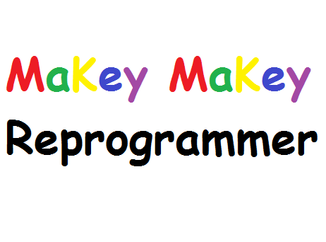

I am trying my hand at my first P2PU course. I am creating the course on how to reprogram the MaKey MaKey.
The course includes collected links to resources already out there but also aims to provide additional peer-created resources such as visual guides for reprogramming using specific operating systems. I am also trying to set it up so that people can share their own unique basic reprogramming exercises for others to try. I am aiming for a mix of guided exercises (straight and to the point tutorials) with community support and peer-based/interest-based learning. Here's a peek at the nav bar:
{kind=link}
Right now, the course includes these badges:
{kind=link}
Participants can get this badge for installing Arduino IDE and contributing to the community. This aims to be a non-trivial badge as a hope is that it will encourage community support as well as let those new to Arduino easily see peers on P2PU/Mozilla Open Badges that already have experience with the process.

The MaKey MaKey Reprogrammer badge, like the Arduino Installer badge, will hopefully help peers that are new to MaKey MaKey identify friends that can potentially help them through their first reprogram.
The Tutorial Tutor badge is a badge that tries to promote people adding content and resources such as tutorials to course communities.
My next steps:
- Get people in the course
- Identify how the community at large wants to shape the course
- Fulfill a better list of detailed but clean guides for specific operating systems
Looking for collaborators!!
If you would like to help, please join the course and help out on the discussion tab or submit feedback in the comments section of relevant pages. Let me know if you want to join as an organizer and I will add you in!
Here's the link to my P2PU course: https://p2pu.org/en/courses/2119/reprogramming-makey-makey/